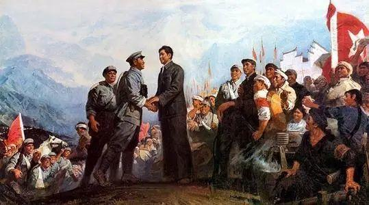

|  | |
井冈山精神 |
|
|
井冈山精神是红色革命精神之一[1]，诞生于土地革命时期的井冈山根据地。井冈山精神的内涵可以用五句话来概括：1.坚定不移的革命信念。2.坚持党的绝对领导。3.密切联系人民群众的思想作风。4.一切从实际出发的思想路线。5.艰苦奋斗的作风。 井冈山精神是中国共产党创造的一种革命精神。诞生于土地革命时期的并冈山根据地，故名。江泽民把井冈山精神概括为“坚定信念、艰苦奋斗、实事求是、敢闯新路、依靠群众、勇于胜利”24个字。与并冈山道路连在一起的井冈山精神是引导中国革命走向胜利的宝贵精神。 |
|